# PEB->BeingDebugged
You can manually check the PEB's
BeingDebugged flag yourself
(think this is what IsDebuggerPresent does, not sure)
•
https://docs.microsoft.com/en-us/windows/win32/api/winternl/ns-winternl-pebBeingDebugged is set to 1 if process is being debugged, 0 if not.
BeingDebugged is a documented member of the PEB on MSDN, so you don't need to grab a complete PEB struct from anywhere for this.
## Code
### c
#include <stdio.h.>
#include <Windows.h>
#include <winternl.h>
BOOLEAN CheckPEB_BeingDebugged()
{
BOOLEAN being_debugged = FALSE;
PPEB p_peb = NULL;
// grab PEB of current process
#ifdef _WIN64
p_peb = (PPEB)__readgsqword(0x60); // TEB + 0x60
#else
p_peb = (PPEB)__readfsdword(0x30); // TEB + 0x30
#endif
if (p_peb->BeingDebugged == 0)
being_debugged = FALSE;
else if (p_peb->BeingDebugged == 1)
being_debugged = TRUE;
return being_debugged;
}
int main()
{
BOOLEAN being_debugged = FALSE;
being_debugged = CheckPEB_BeingDebugged();
if (being_debugged == TRUE)
return 1;
printf("hey :) \n");
return 0;
}
### asm
https://github.com/cetfor/AntiDBG/blob/89f8fb7fb572aae326c2b0538e9e2b2cf56cf102/antidbg/antidbg.c#L43/*
32bit only because Visual Studio doesn't accept x64 inline assembly.
*/
#include <stdio.h>
#include <Windows.h>
BOOL asm_BeingDebuggedPEB(void)
{
BOOL debugger_present = FALSE;
_asm
{
xor eax, eax; // clear eax
mov eax, fs:[0x30]; // grab start of PEB (FS register on 32bit stores the TEB. TEB + 0x30 = PEB - https://en.wikipedia.org/wiki/Win32_Thread_Information_Block )
mov eax, [eax + 0x02]; // move PEB+2 (location of BeingDebugged) into eax
and eax, 0x000000ff; // grab 1 byte of eax
mov debugger_present, eax; // copy value in eax into debugger_present variable
}
return debugger_present;
}
int main()
{
BOOL debugger_present = FALSE;
debugger_present = asm_BeingDebuggedPEB();
if (debugger_present == TRUE)
return 1;
printf("hey \n");
return 0;
}
## Bypass
•
https://www.aldeid.com/wiki/PEB-Process-Environment-Block/BeingDebugged(i'm a noob)
Open in x64dbg.
Debug > Run to user code
Right click in the disassembly pane > Search for > Current module > Strings
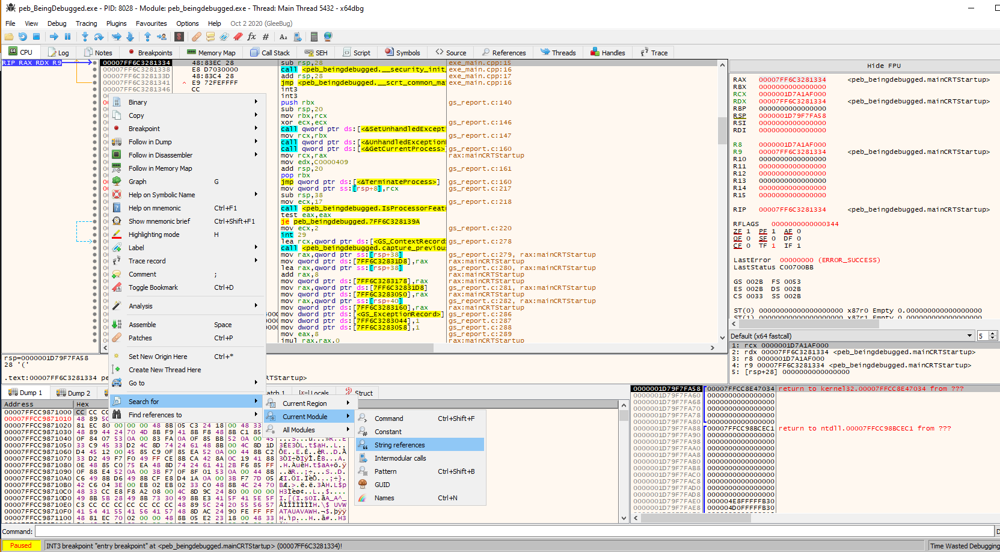Double click to ollow the reference to
"hey :) \n"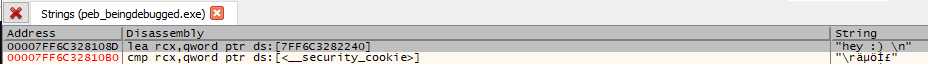On the highlighted line we see our debug check.
It compares the value at
RAX + 2 to
1The next instruction is
jne - jump if not equal
If the value at
RAX + 2 is not equal to
1, we jump to our
printf("hey \n") code.
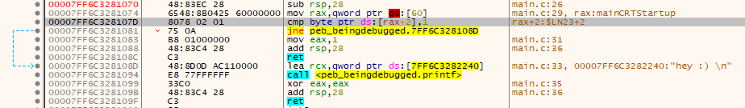Set a breakpoint at the
cmp instruction and run.
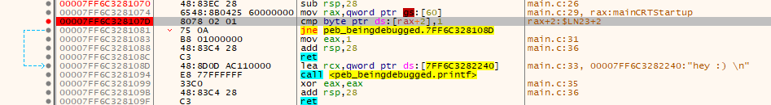We hit the breakpoint.
RAX points to
0000001D7A1AF000Therefore
RAX+2 will point to
0000001D7A1AF002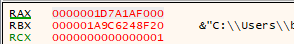Right click > Follow in Dump on the value in RAX
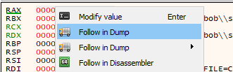In the dump,
RAX+2 is highlighted.
The value at
RAX+2 is
1, meaning that the above
jne won't be taken and our code will exit without printing
hey :)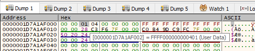Double click the
01, modify it to
00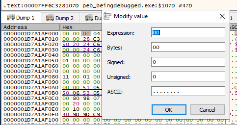Now if we F8 (step over) our code a few times, we see that the
jne instruction jumps successfully and we hit our
printf("hey \n") code.
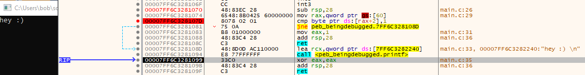We've successfully defeated checking the value in the
PEB->BeingDebugged to evade debuggers!
NOTE:
We can also see that
0000001D7A1AF000 in the Memory Map view corresponds to the process's PEB,
which is what we've just modified.
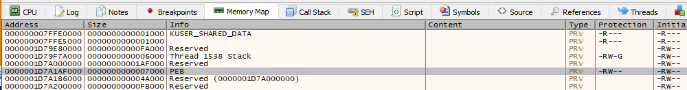YOU CAN
NOP ALL OF THE COMPARISON INSTRUCTIONS IF YOU WANT. THAT WORKS TOO
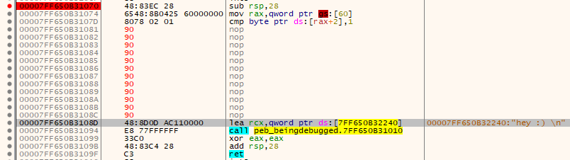